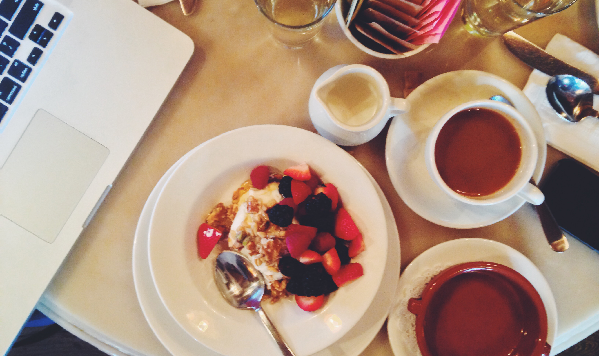

Cory Forsyth runs 201 Created, a web
consultancy that specializes in building ambitious web apps. He is a graduate of NYU's
Interactive Telecommunications Program. Cory has traveled to 57 countries and counting. He
has always been interested in using technology for the common good.
Nidhi Malhotra designs interactive experiences, teaches in the MFA Design and Technology
program at Parsons and shoots film. She's currently working on textiles-based initiatives
with weavers in traditional weaving communities. Nidhi is often interested in making work
that relates analog technologies to current interface vernacular.
Amanda Hesser is the cofounder of Food52 and the author of several books, including the
Times best-seller, The Essential New York Times Cookbook.
Chrysanthe Tenentes is a consultant working with startups on product, community, and
content strategy. She is an organizer of The Shed story salon and the North Brooklyn
Breakfast Club, a tech meetup. She was an early-hire community manager at Foursquare and
outside.in. She is co-founder and Contributing Editor of Brooklyn Based.